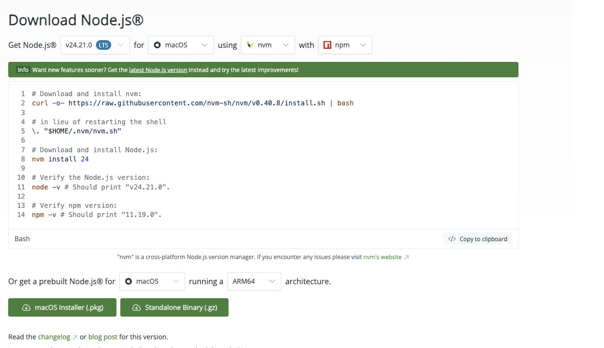
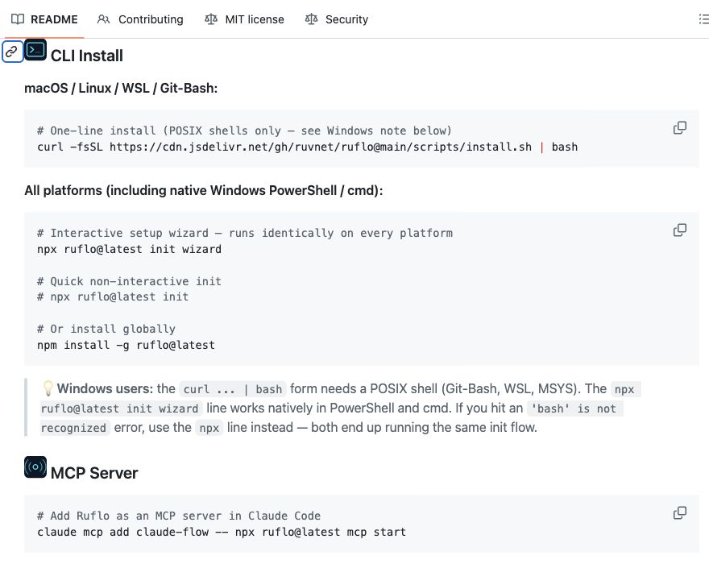

Перед настройкой
Проверь, что Claude Code запускается командой claude и отвечает после входа. Если у тебя пока только расширение VS Code, установи ещё программу для терминала. Начать с нуля поможет инструкция по установке Claude Code. Ruflo работает вместе с ним: доступ к моделям по-прежнему зависит от твоего аккаунта.
Понадобятся Node.js версии 20 или выше и npm версии 9 или выше. Скачай Node.js с пометкой LTS («с долгой поддержкой») с официального сайта. npm установится вместе с ним. Команда npx позволит запускать Ruflo без отдельной установки для всего компьютера.

Создай пустую папку ruflo-test. В VS Code выбери File → Open Folder («Файл → Открыть папку») и открой её. Затем выбери Terminal → New Terminal («Терминал → Новый терминал»). Внизу появится панель для команд. Вставляй их по одной и после каждой нажимай Enter:
node --versionnpm --versionclaude --versionПервые две команды покажут версии Node.js и npm, третья - Claude Code. Сравни их с требованиями выше. Если видишь command not found («команда не найдена»), установи нужную программу и открой новый терминал. Продолжай, когда все три команды выведут версии.
Команды установки вводи в терминале. Запросы помощнику отправляй в чат, который откроется после команды claude. Чтобы вернуться из чата к обычным командам, введи /exit.
Шаг 1. Подготовь Ruflo одной командой
Ruflo можно поставить через плагины Claude Code или через терминал. Здесь выберем терминал: так подключим его инструменты и сохраним память в папке проекта. В командах ниже закреплена версия 3.55.0, актуальная на 8 октября.

В терминале папки ruflo-test вставь эту команду и нажми Enter:
npx -y ruflo@3.55.0 init --no-global --no-mods --no-codex-detect --no-skills-sh --no-signupФлаг -y разрешает загрузить пакет Ruflo. --no-global убирает указатель из общих инструкций, --no-mods отключает дополнительные моды, --no-codex-detect - автоматическую настройку Codex. --no-skills-sh пропускает дополнительную установку скилла, а --no-signup - предложение регистрации. Дождись сообщения, что настройка завершена.
В папке появятся CLAUDE.md с правилами для Claude Code и .claude-flow/ с настройками Ruflo. Папки с точкой могут быть скрыты в файловом менеджере. Задачу ты дашь позже, пока мы готовим проект.
Открой файл .mcp.json в VS Code. В нём будет подключение claude-flow, которое запускает ruflo@latest: последнюю версию на момент запуска. Команда в следующем шаге закрепляет 3.55.0. Она нужна только тогда, когда подключения ещё нет.
Результат: в папке появился CLAUDE.md с упоминанием Ruflo или Claude Flow. Теперь выясним, видит ли его Claude Code.
Шаг 2. Проверь подключение MCP
MCP подключает к Claude Code дополнительные инструменты. Через него Ruflo помогает раздавать задания и сохранять общую память. В том же терминале посмотри список подключений:
claude mcp listНайди claude-flow или ruflo. Рядом должно быть Connected («Подключено»). claude-flow - прежнее имя, оно осталось в команде подключения. Если уже установлен плагин Ruflo, проверь его сервер. Второе подключение к той же памяти не нужно.
Видишь Pending approval («Ожидает одобрения»)? Запусти claude из этой папки и разреши подключение Ruflo для учебного проекта. Введи /exit и ещё раз выполни claude mcp list.
Если Ruflo в списке нет, добавь его командой ниже. Затем повтори claude mcp list. Флаг -y разрешает загрузку пакета: сервер работает в фоне и не сможет спросить тебя об этом сам.
claude mcp add claude-flow -- npx -y ruflo@3.55.0 mcp startЕсли подключение есть, но выдаёт ошибку, перейди к блоку «Если не получилось». Второй сервер ошибку не исправит. Другие команды управления есть в справке Claude Code.
Результат: рядом с Ruflo видно Connected («Подключено»). В следующем шаге попросим его выполнить действие.
Шаг 3. Дай Claude Code обратиться к Ruflo
Запусти Claude Code из этой же папки:
claude
Если он попросит доверять папке или подключению, прочитай запрос и подтверди только этот учебный проект. В открывшемся чате введи:
/mcpНайди Ruflo и список его инструментов. Отправь запрос ниже: он попросит помощника прочитать состояние или память, ничего не создавая.
Проверь подключённый MCP-сервер Ruflo: он может называться claude-flow или ruflo. Найди в его доступном списке инструменты координации и общей памяти. Выполни один доступный запрос чтения состояния или списка записей памяти, без создания агентов и файлов. Покажи название вызванного инструмента и его результат. Если вызов не прошёл, покажи точную ошибку. Не считай список инструментов доказательством успешного вызова.Посмотри, какой инструмент вызвал помощник и что вернул Ruflo. В новом проекте список памяти может быть пустым: ты ещё ничего туда не записывал. Ошибка вместо ответа означает, что сначала нужно наладить подключение.
Результат: в чате видны вызов инструмента Ruflo и его ответ. Связь работает, можно давать первую задачу.
Шаг 4. Собери страницу силами команды
Соберём страницу с чек-листом подготовки короткого видео. Ты сможешь открыть её в браузере и отмечать готовые пункты. Внешние сервисы ей не нужны. Claude Code раздаст работу: один помощник напишет страницу, другой проверит её.
Ruflo помогает распределять задания и хранить требования. Работу выполняют субагенты Claude Code: отдельные помощники, каждый со своим заданием и чатом. Команда agent_spawn только регистрирует роль агента. После неё нужно ещё запустить помощника с конкретным заданием.
Требования сохраним в памяти Ruflo. Инструмент memory_store записывает их под ключом, а memory_retrieve читает по тому же ключу. Пространство имён объединяет записи одной задачи. Эти инструменты доступны в MCP версии 3.55.0.
Скопируй весь запрос ниже и отправь его в чат Claude Code:
Собери в текущем учебном проекте локальную страницу demo/index.html «Готово ли видео к выпуску?». На ней шесть пунктов: понятный звук, читаемый текст, проверенные факты, права на музыку, правильный формат, просмотр целиком. У каждого пункта флажок. Показывай число отмеченных пунктов из шести и кнопку «Сбросить». Всё должно работать при открытии файла в браузере, без сети и установки библиотек.
Ты координатор. Используй подключённый Ruflo для координации и общей памяти. Сначала сохрани требования в demo/brief.md и в памяти Ruflo под ключом uley-demo-brief, в пространстве имён uley-demo. Пространство имён - общая группа записей для этой задачи. Проверь чтением, что запись сохранилась. Если память недоступна, остановись и покажи ошибку.
Дай отдельному субагенту Claude Code написать demo/index.html по этому заданию. После его завершения дай другому субагенту проверить файл по demo/brief.md: наличие шести пунктов, подсчёт, сброс, работу без внешних зависимостей. Перед каждой передачей задания достань требования из памяти Ruflo и передай их исполнителю. Регистрации ролей в Ruflo недостаточно: запусти настоящие задания субагентам Claude Code. Не допускай одновременного редактирования одного файла.
Пусть проверяющий сохранит замечания и выполненные проверки в demo/review.md. Верни замечания исполнителю, добейся исправлений и повторной проверки. Если браузер недоступен, отдели проверку кода от ручной проверки, не называй клики выполненными.
Сохрани итог в памяти Ruflo под ключом uley-demo-result, в том же пространстве uley-demo: что собрано, пути файлов, результаты проверок, что ещё требует ручного просмотра. Покажи успешные вызовы записи и чтения, роли, реальные задания субагентам и итоговый список файлов. В demo/README.md напиши, как открыть страницу и проверить её. Не подключай внешние API и ничего не публикуй.Когда помощники закончат, найди demo/index.html в папке ruflo-test и открой двойным щелчком. Отметь любые два пункта: счётчик должен показать 2 из 6. Нажми «Сбросить»: флажки снимутся, счётчик вернётся к 0 из 6. Если что-то не работает, опиши это Claude Code и попроси исправить страницу и проверить ещё раз.
Результат: страница открывается, счётчик и кнопка «Сбросить» работают. В чате видны задания двум помощникам, в demo/review.md - проверки, а у Ruflo - запись и чтение памяти. Осталась последняя проверка: что произойдёт, если закрыть чат?
Шаг 5. Передай общий контекст новому чату
Закрой чат командой /exit и снова запусти claude в папке ruflo-test. В новом чате отправь:
Через подключённый MCP-сервер Ruflo прочитай записи uley-demo-brief и uley-demo-result из пространства имён uley-demo. Сначала покажи успешные вызовы и содержимое записей, не подменяй их чтением файлов. Если запись не найдена, покажи ошибку и остановись.
По полученным записям объясни, какую страницу собирала команда, где лежит результат, какие проверки прошли и что осталось проверить вручную. Затем открой demo/brief.md и demo/review.md и сравни с памятью. Покажи расхождения. Пока не меняй файлы.У каждого субагента свой чат: он не видит весь твой разговор с координатором. Поэтому координатор сначала сохраняет требования, затем читает их перед передачей задания помощнику. После проверки он записывает итог. Так следующий помощник получает нужные сведения из общей памяти.
Сравни две записи с файлами. В задании должны быть все шесть пунктов чек-листа. В итоге - пути страницы и отчёта проверки. Если запись описывает другой результат, попроси исправить её.
Результат: новый чат прочитал обе записи через Ruflo и показал, что собрала команда. Тебе не пришлось пересказывать задание. Теперь можно продолжить работу с сохранёнными требованиями и результатами проверки.
Сколько стоит
Цены на 8 октября 2026 года, в долларах США. Отдельно считаются локальный пакет Ruflo и доступ к Claude Code.
- Ruflo: $0 за пакет. Это бесплатная программа с лицензией MIT. Установка через npm и локальный MCP-сервер не требуют месячной подписки. В этом примере память хранится в папке проекта на твоём компьютере.
- Claude Code: Pro стоит $20 в месяц или $200 за год. На сайте годовую цену показывают как $17 в месяц после округления. Max - от $100 в месяц. Claude Code входит в эти планы, но у каждого свои лимиты.
- Субагенты: Ruflo не берёт плату за каждую роль. Запросы помощников расходуют те же лимиты Claude Code, что и запросы координатора. Если работаешь через API, платишь по тарифу выбранной модели за входной и выходной текст. Фиксированной цены за команду нет.
Для этой учебной страницы не нужны внешние API, облачные сервисы Ruflo и дополнительные ключи. Если Claude Code у тебя уже есть, начни с локального Ruflo за $0. Помощники расходуют запросы модели, поэтому больше ролей не означает меньше расходов.
Если не получилось
Инициализация завершилась ошибкой
В терминале папки ruflo-test запусти диагностику:
npx -y ruflo@3.55.0 doctorСкопируй полный текст ошибки и результат диагностики. Отправь Claude Code и попроси объяснить причину, затем дать одно действие для исправления. Не добавляй --force («принудительно») к установке, пока не выяснишь, какие настройки она заменит.
Сервер есть в списке, но соединения нет
Введи /exit, чтобы выйти из чата. В этом же терминале проверь node --version и запусти npx -y ruflo@3.55.0 doctor. Исправь указанную ошибку, повтори claude mcp list, запусти claude и открой /mcp. Начни с версии Node.js и подключения сервера. К командной задаче возвращайся после успешного вызова из шага 3.
Claude пишет «команда создана», а файл делает сам
Попроси Claude Code показать задания субагентам, их ответы и обращения к Ruflo. Если в ответе только список ролей, снова отправь запрос из шага 4. Попроси выполнить часть, где отдельные помощники пишут и проверяют файл.
Ruflo не возвращает сохранённое задание
Попроси прочитать ключ uley-demo-brief в пространстве uley-demo. Используй тот же MCP-сервер, через который сохранял запись: у другого подключения может быть другая память. Ruflo умеет читать по ключу и искать записи. Если поиск пуст, попробуй чтение по точному ключу.
Команда сохранила результат. Как поручить ей работу для своего проекта?
Инструкция пройдена. А как сделать, чтобы нейросети приводили клиентов?
Концентрат - онлайн-мероприятие Ивана Сергеева по вайбмаркетингу: 13-15 октября, 19:00 по Москве. Участие бесплатное, регистрация на сайте до 14 октября
ЗарегистрироватьсяРеклама. ИП Сергеев И. С., ИНН 352511695540. erid: 2VtzqviiWtm